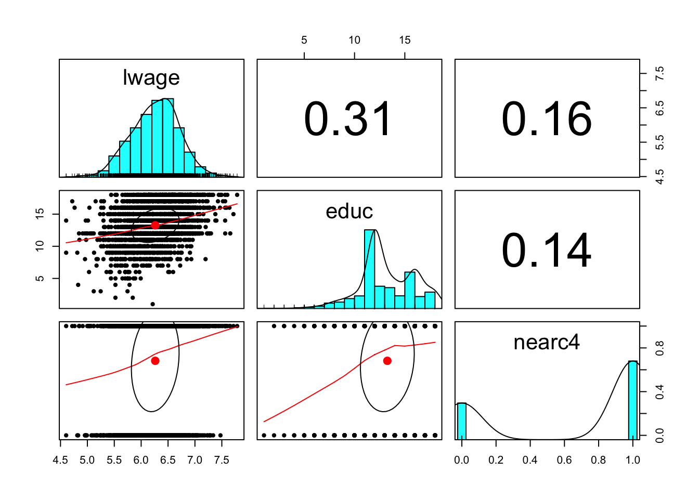
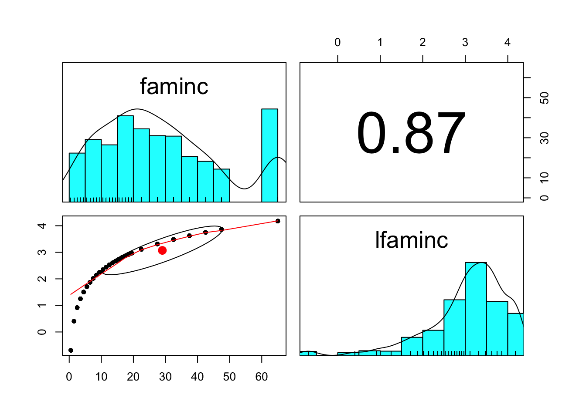
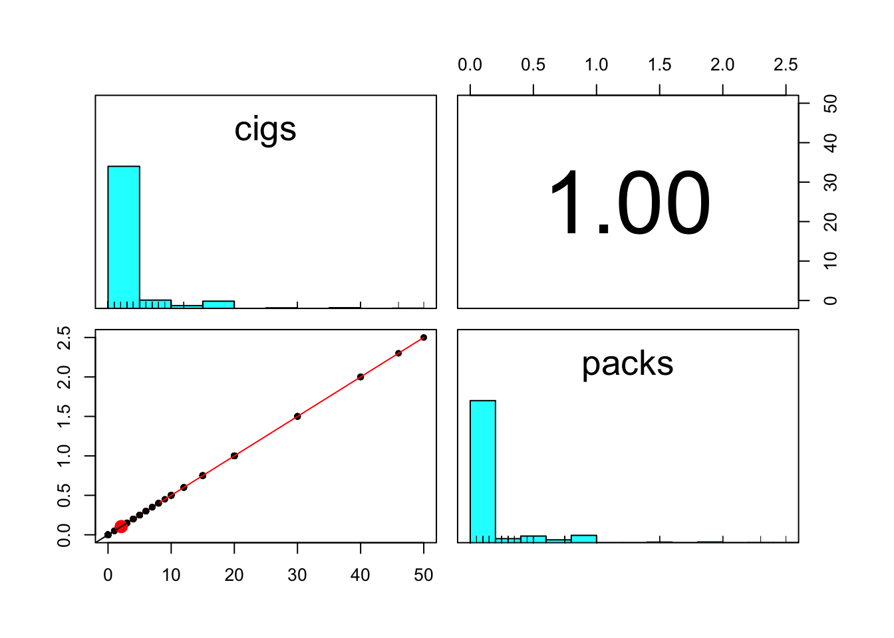
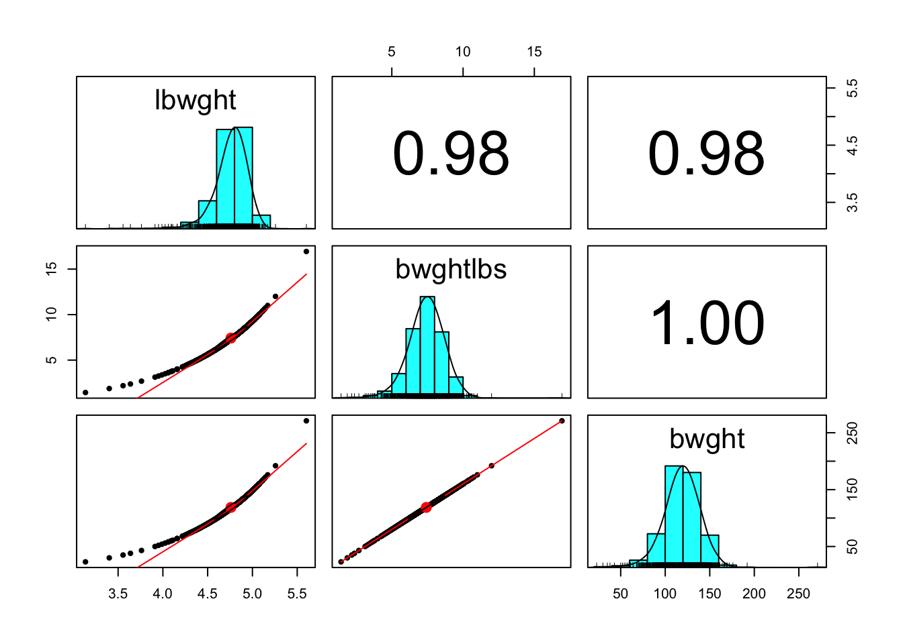
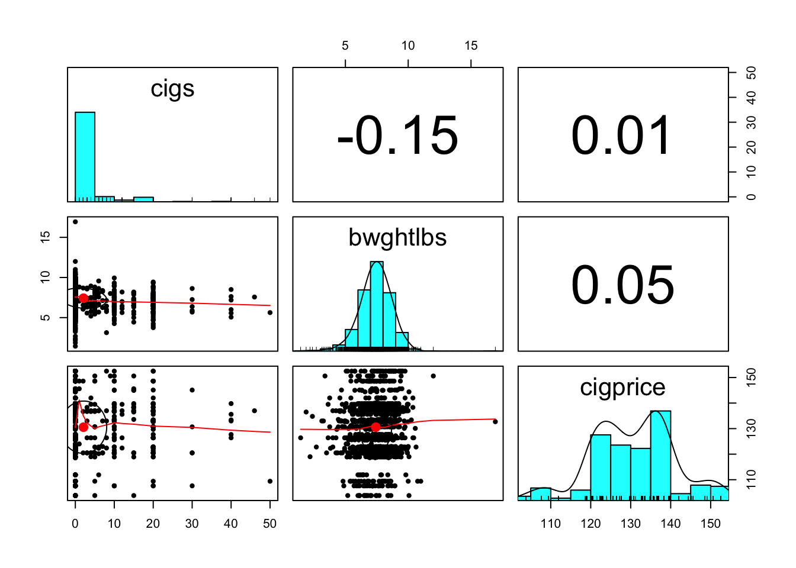
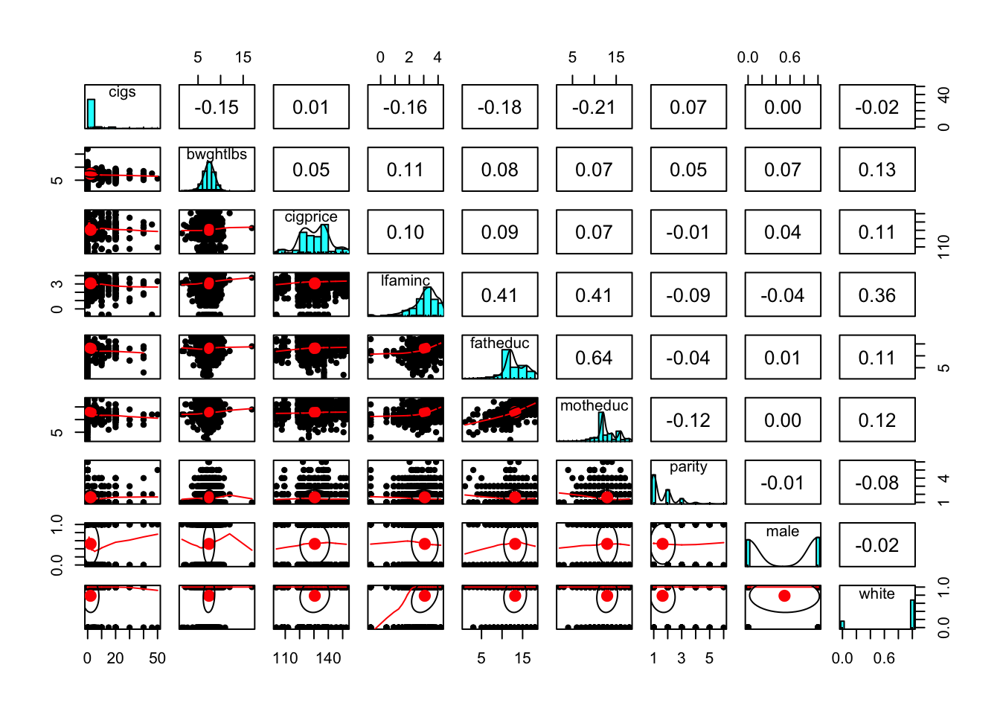

Chapter 4 Instrumental Variable
In this lab, we will use Card (1995) to see how we can use an instrumental variable (distance to the nearest college) to estimate the effect of schooling on wage.
4.1 Loading Data
Load Stata file:
library(psych)
library(foreign)
library(car)
card.data<-read.dta("card.dta") See the description of the data here: https://www.ssc.wisc.edu/~bhansen/econometrics/Card1995_description.pdf
Preview the data:
attach(card.data)
head(card.data)## id nearc2 nearc4 educ age fatheduc motheduc weight momdad14 sinmom14 step14 reg661
## 1 2 0 0 7 29 NA NA 158413 1 0 0 1
## 2 3 0 0 12 27 8 8 380166 1 0 0 1
## 3 4 0 0 12 34 14 12 367470 1 0 0 1
## 4 5 1 1 11 27 11 12 380166 1 0 0 0
## 5 6 1 1 12 34 8 7 367470 1 0 0 0
## 6 7 1 1 12 26 9 12 380166 1 0 0 0
## reg662 reg663 reg664 reg665 reg666 reg667 reg668 reg669 south66 black smsa south
## 1 0 0 0 0 0 0 0 0 0 1 1 0
## 2 0 0 0 0 0 0 0 0 0 0 1 0
## 3 0 0 0 0 0 0 0 0 0 0 1 0
## 4 1 0 0 0 0 0 0 0 0 0 1 0
## 5 1 0 0 0 0 0 0 0 0 0 1 0
## 6 1 0 0 0 0 0 0 0 0 0 1 0
## smsa66 wage enroll kww iq married libcrd14 exper lwage expersq
## 1 1 548 0 15 NA 1 0 16 6.306275 256
## 2 1 481 0 35 93 1 1 9 6.175867 81
## 3 1 721 0 42 103 1 1 16 6.580639 256
## 4 1 250 0 25 88 1 1 10 5.521461 100
## 5 1 729 0 34 108 1 0 16 6.591674 256
## 6 1 500 0 38 85 1 1 8 6.214608 644.2 Setup
- Treatment: educ (years of education)
- Outcome: lwage (log_wage)
- IV: nearc4 (whether live close to a four-year college or not)
pairs.panels(card.data[,c('lwage','educ', 'nearc4')])
4.3 Regression Approaches
4.3.1 Naive Regression: OLS estimate with treatment only
m0<-lm(lwage~educ, data = card.data)
summary(m0)##
## Call:
## lm(formula = lwage ~ educ, data = card.data)
##
## Residuals:
## Min 1Q Median 3Q Max
## -1.73799 -0.27764 0.02373 0.28839 1.46080
##
## Coefficients:
## Estimate Std. Error t value Pr(>|t|)
## (Intercept) 5.57088 0.03883 143.47 <2e-16 ***
## educ 0.05209 0.00287 18.15 <2e-16 ***
## ---
## Signif. codes: 0 '***' 0.001 '**' 0.01 '*' 0.05 '.' 0.1 ' ' 1
##
## Residual standard error: 0.4214 on 3008 degrees of freedom
## Multiple R-squared: 0.09874, Adjusted R-squared: 0.09844
## F-statistic: 329.5 on 1 and 3008 DF, p-value: < 2.2e-164.3.2 Regression with covariates
We find education is SSD, but we can make the case that it is endogenous.
m1<-lm(lwage~educ+exper+expersq+black+south+smsa+reg661+reg662+reg663+
reg664+reg665+reg666+reg667+reg668+smsa66, data = card.data)
summary(m1)##
## Call:
## lm(formula = lwage ~ educ + exper + expersq + black + south +
## smsa + reg661 + reg662 + reg663 + reg664 + reg665 + reg666 +
## reg667 + reg668 + smsa66, data = card.data)
##
## Residuals:
## Min 1Q Median 3Q Max
## -1.62326 -0.22141 0.02001 0.23932 1.33340
##
## Coefficients:
## Estimate Std. Error t value Pr(>|t|)
## (Intercept) 4.7393766 0.0715282 66.259 < 2e-16 ***
## educ 0.0746933 0.0034983 21.351 < 2e-16 ***
## exper 0.0848320 0.0066242 12.806 < 2e-16 ***
## expersq -0.0022870 0.0003166 -7.223 6.41e-13 ***
## black -0.1990123 0.0182483 -10.906 < 2e-16 ***
## south -0.1479550 0.0259799 -5.695 1.35e-08 ***
## smsa 0.1363845 0.0201005 6.785 1.39e-11 ***
## reg661 -0.1185698 0.0388301 -3.054 0.002281 **
## reg662 -0.0222026 0.0282575 -0.786 0.432092
## reg663 0.0259703 0.0273644 0.949 0.342670
## reg664 -0.0634942 0.0356803 -1.780 0.075254 .
## reg665 0.0094551 0.0361174 0.262 0.793503
## reg666 0.0219476 0.0400984 0.547 0.584182
## reg667 -0.0005887 0.0393793 -0.015 0.988073
## reg668 -0.1750058 0.0463394 -3.777 0.000162 ***
## smsa66 0.0262417 0.0194477 1.349 0.177327
## ---
## Signif. codes: 0 '***' 0.001 '**' 0.01 '*' 0.05 '.' 0.1 ' ' 1
##
## Residual standard error: 0.3723 on 2994 degrees of freedom
## Multiple R-squared: 0.2998, Adjusted R-squared: 0.2963
## F-statistic: 85.48 on 15 and 2994 DF, p-value: < 2.2e-164.4 IV: Does education effect wages when college proximity is used as the instrument?
Is college proximity an exogenous determinant of wages?
4.4.1 Stage 1: T on IV
m2<-lm(educ~nearc4+exper+expersq+black+south+smsa+reg661+reg662+reg663+
reg664+reg665+reg666+reg667+reg668+smsa66, data = card.data)
summary(m2)##
## Call:
## lm(formula = educ ~ nearc4 + exper + expersq + black + south +
## smsa + reg661 + reg662 + reg663 + reg664 + reg665 + reg666 +
## reg667 + reg668 + smsa66, data = card.data)
##
## Residuals:
## Min 1Q Median 3Q Max
## -7.545 -1.370 -0.091 1.278 6.239
##
## Coefficients:
## Estimate Std. Error t value Pr(>|t|)
## (Intercept) 16.8485239 0.2111222 79.805 < 2e-16 ***
## nearc4 0.3198989 0.0878638 3.641 0.000276 ***
## exper -0.4125334 0.0336996 -12.241 < 2e-16 ***
## expersq 0.0008686 0.0016504 0.526 0.598728
## black -0.9355287 0.0937348 -9.981 < 2e-16 ***
## south -0.0516126 0.1354284 -0.381 0.703152
## smsa 0.4021825 0.1048112 3.837 0.000127 ***
## reg661 -0.2102710 0.2024568 -1.039 0.299076
## reg662 -0.2889073 0.1473395 -1.961 0.049992 *
## reg663 -0.2382099 0.1426357 -1.670 0.095012 .
## reg664 -0.0930890 0.1859827 -0.501 0.616742
## reg665 -0.4828875 0.1881872 -2.566 0.010336 *
## reg666 -0.5130857 0.2096352 -2.448 0.014442 *
## reg667 -0.4270887 0.2056208 -2.077 0.037880 *
## reg668 0.3136204 0.2416739 1.298 0.194490
## smsa66 0.0254805 0.1057692 0.241 0.809644
## ---
## Signif. codes: 0 '***' 0.001 '**' 0.01 '*' 0.05 '.' 0.1 ' ' 1
##
## Residual standard error: 1.941 on 2994 degrees of freedom
## Multiple R-squared: 0.4771, Adjusted R-squared: 0.4745
## F-statistic: 182.1 on 15 and 2994 DF, p-value: < 2.2e-16Predicted part in T:
educ_hat = fitted(m2)4.4.1.1 test of weak instrument - rejected
linearHypothesis(m2, c("nearc4=0"))## Linear hypothesis test
##
## Hypothesis:
## nearc4 = 0
##
## Model 1: restricted model
## Model 2: educ ~ nearc4 + exper + expersq + black + south + smsa + reg661 +
## reg662 + reg663 + reg664 + reg665 + reg666 + reg667 + reg668 +
## smsa66
##
## Res.Df RSS Df Sum of Sq F Pr(>F)
## 1 2995 11324
## 2 2994 11274 1 49.917 13.256 0.0002763 ***
## ---
## Signif. codes: 0 '***' 0.001 '**' 0.01 '*' 0.05 '.' 0.1 ' ' 14.4.2 Stage 2: Y on T_hat
m2b = lm(lwage~ educ_hat+exper+expersq+black+south+smsa+reg661+reg662+reg663+
reg664+reg665+reg666+reg667+reg668+smsa66, data = card.data)
summary(m2b)##
## Call:
## lm(formula = lwage ~ educ_hat + exper + expersq + black + south +
## smsa + reg661 + reg662 + reg663 + reg664 + reg665 + reg666 +
## reg667 + reg668 + smsa66, data = card.data)
##
## Residuals:
## Min 1Q Median 3Q Max
## -1.57387 -0.25161 0.01483 0.27229 1.38522
##
## Coefficients:
## Estimate Std. Error t value Pr(>|t|)
## (Intercept) 3.7739651 0.9612564 3.926 8.83e-05 ***
## educ_hat 0.1315038 0.0565103 2.327 0.020028 *
## exper 0.1082711 0.0243243 4.451 8.85e-06 ***
## expersq -0.0023349 0.0003429 -6.810 1.18e-11 ***
## black -0.1467757 0.0554166 -2.649 0.008125 **
## south -0.1446715 0.0280524 -5.157 2.67e-07 ***
## smsa 0.1118083 0.0325530 3.435 0.000601 ***
## reg661 -0.1078142 0.0429903 -2.508 0.012199 *
## reg662 -0.0070465 0.0338333 -0.208 0.835032
## reg663 0.0404445 0.0326749 1.238 0.215892
## reg664 -0.0579172 0.0386641 -1.498 0.134250
## reg665 0.0384577 0.0482596 0.797 0.425577
## reg666 0.0550887 0.0541416 1.017 0.309001
## reg667 0.0267580 0.0502027 0.533 0.594074
## reg668 -0.1908912 0.0521383 -3.661 0.000255 ***
## smsa66 0.0185311 0.0222167 0.834 0.404286
## ---
## Signif. codes: 0 '***' 0.001 '**' 0.01 '*' 0.05 '.' 0.1 ' ' 1
##
## Residual standard error: 0.3993 on 2994 degrees of freedom
## Multiple R-squared: 0.1947, Adjusted R-squared: 0.1907
## F-statistic: 48.25 on 15 and 2994 DF, p-value: < 2.2e-164.4.3 All-in-one function ivreg():
library(AER)
m4<-ivreg(lwage~educ+exper+expersq+black+south+smsa+reg661+reg662+reg663+
reg664+reg665+reg666+reg667+reg668+smsa66 | nearc4+exper+expersq+black+south+smsa+reg661+reg662+reg663+
reg664+reg665+reg666+reg667+reg668+smsa66)- formula, instruments
- formula specification(s) of the regression relationship and the instruments.
- instruments is missing and formula has three parts as in y ~ x1 + x2 | z1 + z2 + z3 (recommended)
Alternatively:
m4<-ivreg(lwage~educ+exper+expersq+black+south+smsa+reg661+reg662+reg663+
reg664+reg665+reg666+reg667+reg668+smsa66 | .-educ+nearc4)to the left of |: outcome = lwage
to the left of |: variables = educ+exper+expersq+black+south+smsa+reg661+reg662+reg663+reg664+reg665+reg666+reg667+reg668+smsa66
to the right of |: variables = nearc4+exper+expersq+black+south+smsa+reg661+reg662+reg663+reg664+reg665+reg666+reg667+reg668+smsa66
to the right of |: outcome = educ
to the right of |: 1st stage of 2SLS
to the left of |: 2nd stage of 2SLS
‘.’ means all variables in the dataset besides the one to the left of lwage
- treatment variable
- instrument
Test using sandwich standard errors:
summary(m4, vcov = sandwich, diagnostics = TRUE)##
## Call:
## ivreg(formula = lwage ~ educ + exper + expersq + black + south +
## smsa + reg661 + reg662 + reg663 + reg664 + reg665 + reg666 +
## reg667 + reg668 + smsa66 | . - educ + nearc4)
##
## Residuals:
## Min 1Q Median 3Q Max
## -1.83164 -0.24075 0.02428 0.25208 1.42760
##
## Coefficients:
## Estimate Std. Error t value Pr(>|t|)
## (Intercept) 3.7739651 0.9174053 4.114 4.00e-05 ***
## educ 0.1315038 0.0539995 2.435 0.014938 *
## exper 0.1082711 0.0233466 4.638 3.68e-06 ***
## expersq -0.0023349 0.0003478 -6.713 2.27e-11 ***
## black -0.1467757 0.0523622 -2.803 0.005094 **
## south -0.1446715 0.0290653 -4.977 6.81e-07 ***
## smsa 0.1118083 0.0310619 3.600 0.000324 ***
## reg661 -0.1078142 0.0409668 -2.632 0.008538 **
## reg662 -0.0070465 0.0336994 -0.209 0.834387
## reg663 0.0404445 0.0325208 1.244 0.213725
## reg664 -0.0579172 0.0392106 -1.477 0.139759
## reg665 0.0384577 0.0494675 0.777 0.436965
## reg666 0.0550887 0.0521309 1.057 0.290716
## reg667 0.0267580 0.0501066 0.534 0.593367
## reg668 -0.1908912 0.0506897 -3.766 0.000169 ***
## smsa66 0.0185311 0.0205103 0.904 0.366333
##
## Diagnostic tests:
## df1 df2 statistic p-value
## Weak instruments 1 2994 14.214 0.000166 ***
## Wu-Hausman 1 2993 1.219 0.269649
## Sargan 0 NA NA NA
## ---
## Signif. codes: 0 '***' 0.001 '**' 0.01 '*' 0.05 '.' 0.1 ' ' 1
##
## Residual standard error: 0.3883 on 2994 degrees of freedom
## Multiple R-Squared: 0.2382, Adjusted R-squared: 0.2343
## Wald test: 56.06 on 15 and 2994 DF, p-value: < 2.2e-164.4.4 Diagnostic tests:
df1 df2 statistic p-value
Weak instruments 1 2994 14.214 0.000166 ***
Wu-Hausman 1 2993 1.219 0.269649
Sargan 0 NA NA NA Weak instruments means that the IV has a low correlation with the treatment variable. The null is that the IV is weak. If the null is rejected, so you can move forward with the assumption that the instrument is sufficiently strong.
Applied to 2SLS regression, the Wu–Hausman test is a test of endogenity. If all of the regressors are exogenous, then both the OLS and 2SLS estimators are consistent, and the OLS estimator is more efficient, but if one or more regressors are endogenous, then the OLS estimator is inconsistent. A large test statistic and small p-value suggests that the OLS estimator is inconsistent and the 2SLS estimator is therefore to be preferred.
4.4.5 Multiple IV
#m5<-ivreg(lwage~educ | .-educ+nearc4+nearc2)
m5<-ivreg(lwage~educ+exper+expersq+black+south+smsa+reg661+reg662+reg663+reg664+reg665+reg666+reg667+reg668+smsa66 | .-educ+nearc4+nearc2)
summary(m5, vcov = sandwich, diagnostics = TRUE)##
## Call:
## ivreg(formula = lwage ~ educ + exper + expersq + black + south +
## smsa + reg661 + reg662 + reg663 + reg664 + reg665 + reg666 +
## reg667 + reg668 + smsa66 | . - educ + nearc4 + nearc2)
##
## Residuals:
## Min 1Q Median 3Q Max
## -1.93841 -0.25068 0.01932 0.26519 1.46998
##
## Coefficients:
## Estimate Std. Error t value Pr(>|t|)
## (Intercept) 3.3396868 0.8909170 3.749 0.000181 ***
## educ 0.1570594 0.0524127 2.997 0.002753 **
## exper 0.1188149 0.0228905 5.191 2.24e-07 ***
## expersq -0.0023565 0.0003674 -6.414 1.64e-10 ***
## black -0.1232778 0.0514904 -2.394 0.016718 *
## south -0.1431945 0.0301873 -4.744 2.20e-06 ***
## smsa 0.1007530 0.0313621 3.213 0.001329 **
## reg661 -0.1029760 0.0425755 -2.419 0.015637 *
## reg662 -0.0002286 0.0345230 -0.007 0.994716
## reg663 0.0469556 0.0335252 1.401 0.161435
## reg664 -0.0554084 0.0408927 -1.355 0.175529
## reg665 0.0515041 0.0506274 1.017 0.309085
## reg666 0.0699968 0.0534531 1.309 0.190466
## reg667 0.0390596 0.0514309 0.759 0.447639
## reg668 -0.1980371 0.0522335 -3.791 0.000153 ***
## smsa66 0.0150626 0.0211120 0.713 0.475616
##
## Diagnostic tests:
## df1 df2 statistic p-value
## Weak instruments 2 2993 8.366 0.000238 ***
## Wu-Hausman 1 2993 2.978 0.084509 .
## Sargan 1 NA 1.248 0.263905
## ---
## Signif. codes: 0 '***' 0.001 '**' 0.01 '*' 0.05 '.' 0.1 ' ' 1
##
## Residual standard error: 0.4053 on 2994 degrees of freedom
## Multiple R-Squared: 0.1702, Adjusted R-squared: 0.166
## Wald test: 51.65 on 15 and 2994 DF, p-value: < 2.2e-16- Sargan tests overidentification restrictions. The idea is that if you have more than one instrument per endogenous variable, the model is overidentified, and you have some excess information. All of the instruments must be valid for the inferences to be correct. So it tests that all exogenous instruments are in fact exogenous, and uncorrelated with the model residuals. If it is significant, it means that you don’t have valid instruments (somewhere in there, as this is a global test). If it is not significant (our case), this isn’t a concern.
4.4.6 Compare with OLS:
library(stargazer)
stargazer::stargazer(m0, m1, m2b, m4,
type = 'text', model.names = FALSE,
column.labels = c('Naive', 'OLS', '2SLS', 'IV'),
column.sep.width = "15pt",
omit.stat = c("f", "ser"))##
## ===================================================
## Dependent variable:
## --------------------------------------
## lwage
## Naive OLS 2SLS IV
## (1) (2) (3) (4)
## ---------------------------------------------------
## educ 0.052*** 0.075*** 0.132**
## (0.003) (0.003) (0.055)
##
## educ_hat 0.132**
## (0.057)
##
## exper 0.085*** 0.108*** 0.108***
## (0.007) (0.024) (0.024)
##
## expersq -0.002*** -0.002*** -0.002***
## (0.0003) (0.0003) (0.0003)
##
## black -0.199*** -0.147*** -0.147***
## (0.018) (0.055) (0.054)
##
## south -0.148*** -0.145*** -0.145***
## (0.026) (0.028) (0.027)
##
## smsa 0.136*** 0.112*** 0.112***
## (0.020) (0.033) (0.032)
##
## reg661 -0.119*** -0.108** -0.108***
## (0.039) (0.043) (0.042)
##
## reg662 -0.022 -0.007 -0.007
## (0.028) (0.034) (0.033)
##
## reg663 0.026 0.040 0.040
## (0.027) (0.033) (0.032)
##
## reg664 -0.063* -0.058 -0.058
## (0.036) (0.039) (0.038)
##
## reg665 0.009 0.038 0.038
## (0.036) (0.048) (0.047)
##
## reg666 0.022 0.055 0.055
## (0.040) (0.054) (0.053)
##
## reg667 -0.001 0.027 0.027
## (0.039) (0.050) (0.049)
##
## reg668 -0.175*** -0.191*** -0.191***
## (0.046) (0.052) (0.051)
##
## smsa66 0.026 0.019 0.019
## (0.019) (0.022) (0.022)
##
## Constant 5.571*** 4.739*** 3.774*** 3.774***
## (0.039) (0.072) (0.961) (0.935)
##
## ---------------------------------------------------
## Observations 3,010 3,010 3,010 3,010
## R2 0.099 0.300 0.195 0.238
## Adjusted R2 0.098 0.296 0.191 0.234
## ===================================================
## Note: *p<0.1; **p<0.05; ***p<0.014.5 Take-home exercise
4.5.1 Does cigarette smoking have an effect on child birth weight (Wooldridge, 2002)?
bwght<-read.dta("bwght.dta")
head(bwght)## faminc cigtax cigprice bwght fatheduc motheduc parity male white cigs lbwght
## 1 13.5 16.5 122.3 109 12 12 1 1 1 0 4.691348
## 2 7.5 16.5 122.3 133 6 12 2 1 0 0 4.890349
## 3 0.5 16.5 122.3 129 NA 12 2 0 0 0 4.859812
## 4 15.5 16.5 122.3 126 12 12 2 1 0 0 4.836282
## 5 27.5 16.5 122.3 134 14 12 2 1 1 0 4.897840
## 6 7.5 16.5 122.3 118 12 14 6 1 0 0 4.770685
## bwghtlbs packs lfaminc
## 1 6.8125 0 2.6026897
## 2 8.3125 0 2.0149031
## 3 8.0625 0 -0.6931472
## 4 7.8750 0 2.7408400
## 5 8.3750 0 3.3141861
## 6 7.3750 0 2.0149031attach(bwght)4.5.2 Missing data
colSums(apply(bwght, 2, is.na))## faminc cigtax cigprice bwght fatheduc motheduc parity male white
## 0 0 0 0 196 1 0 0 0
## cigs lbwght bwghtlbs packs lfaminc
## 0 0 0 0 0- https://rdrr.io/cran/wooldridge/man/bwght.html
- A data.frame with 1388 observations on 14 variables:
- cigtax: cig. tax in home state, 1988
- cigprice: cig. price in home state, 1988 (tax already included)
- faminc: 1988 family income, $1000s
- lfaminc: log(faminc)
- fatheduc: father’s yrs of educ
- motheduc: mother’s yrs of educ
- parity: birth order of child
- male: =1 if male child
- white: =1 if white
- cigs: cigs smked per day while preg
- packs: packs smked per day while preg
- lbwght: log of bwght
- bwghtlbs: birth weight, pounds
- bwght: birth weight, ounces
library(psych)
pairs.panels(bwght[,c('faminc','lfaminc')]) # lfaminc is better
pairs.panels(bwght[,c('cigs','packs')]) # same, go with cigs
pairs.panels(bwght[,c('lbwght','bwghtlbs', 'bwght')]) # any is good, go with bwghtlbs
pairs.panels(bwght[,c('cigs','bwghtlbs', 'cigprice')]) # low correlations
pairs.panels(bwght[,c('cigs','bwghtlbs', 'cigprice', 'lfaminc', 'fatheduc', 'motheduc', 'parity', 'male', 'white')])
4.5.4 Naive Regression: OLS Estimate with treatment only
m0<-lm(bwghtlbs ~ cigs, data = bwght)
summary(m0)##
## Call:
## lm(formula = bwghtlbs ~ cigs, data = bwght)
##
## Residuals:
## Min 1Q Median 3Q Max
## -6.0482 -0.7357 0.0186 0.8268 9.4518
##
## Coefficients:
## Estimate Std. Error t value Pr(>|t|)
## (Intercept) 7.485744 0.035771 209.267 < 2e-16 ***
## cigs -0.032111 0.005656 -5.678 1.66e-08 ***
## ---
## Signif. codes: 0 '***' 0.001 '**' 0.01 '*' 0.05 '.' 0.1 ' ' 1
##
## Residual standard error: 1.258 on 1386 degrees of freedom
## Multiple R-squared: 0.02273, Adjusted R-squared: 0.02202
## F-statistic: 32.24 on 1 and 1386 DF, p-value: 1.662e-084.5.5 Regression with covariates
m1<-lm(bwghtlbs ~ cigs+lfaminc+fatheduc+motheduc+parity+male+white, data = bwght)
summary(m1)##
## Call:
## lm(formula = bwghtlbs ~ cigs + lfaminc + fatheduc + motheduc +
## parity + male + white, data = bwght)
##
## Residuals:
## Min 1Q Median 3Q Max
## -5.8763 -0.7293 0.0241 0.7912 9.5145
##
## Coefficients:
## Estimate Std. Error t value Pr(>|t|)
## (Intercept) 6.658642 0.254769 26.136 < 2e-16 ***
## cigs -0.037336 0.006856 -5.446 6.27e-08 ***
## lfaminc 0.076288 0.057027 1.338 0.181234
## fatheduc 0.025947 0.017417 1.490 0.136565
## motheduc -0.021047 0.019852 -1.060 0.289270
## parity 0.119845 0.040955 2.926 0.003496 **
## male 0.239041 0.071462 3.345 0.000849 ***
## white 0.289841 0.100741 2.877 0.004085 **
## ---
## Signif. codes: 0 '***' 0.001 '**' 0.01 '*' 0.05 '.' 0.1 ' ' 1
##
## Residual standard error: 1.228 on 1183 degrees of freedom
## (197 observations deleted due to missingness)
## Multiple R-squared: 0.05444, Adjusted R-squared: 0.04885
## F-statistic: 9.731 on 7 and 1183 DF, p-value: 7.985e-124.5.5.1 test of weak instrument - rejected
m2<-lm(cigs ~ cigprice+lfaminc+fatheduc+motheduc+parity+male+white, data = bwght)
summary(m2)##
## Call:
## lm(formula = cigs ~ cigprice + lfaminc + fatheduc + motheduc +
## parity + male + white, data = bwght)
##
## Residuals:
## Min 1Q Median 3Q Max
## -6.509 -2.309 -1.466 -0.148 37.113
##
## Coefficients:
## Estimate Std. Error t value Pr(>|t|)
## (Intercept) 7.13393 2.09009 3.413 0.000664 ***
## cigprice 0.01366 0.01473 0.928 0.353749
## lfaminc -0.55819 0.24177 -2.309 0.021129 *
## fatheduc -0.11362 0.07385 -1.538 0.124201
## motheduc -0.33481 0.08360 -4.005 6.58e-05 ***
## parity 0.13511 0.17357 0.778 0.436485
## male -0.37175 0.30303 -1.227 0.220151
## white 0.64796 0.42747 1.516 0.129839
## ---
## Signif. codes: 0 '***' 0.001 '**' 0.01 '*' 0.05 '.' 0.1 ' ' 1
##
## Residual standard error: 5.204 on 1183 degrees of freedom
## (197 observations deleted due to missingness)
## Multiple R-squared: 0.05705, Adjusted R-squared: 0.05147
## F-statistic: 10.22 on 7 and 1183 DF, p-value: 1.753e-12library(car)
linearHypothesis(m2, c("cigprice=0"))## Linear hypothesis test
##
## Hypothesis:
## cigprice = 0
##
## Model 1: restricted model
## Model 2: cigs ~ cigprice + lfaminc + fatheduc + motheduc + parity + male +
## white
##
## Res.Df RSS Df Sum of Sq F Pr(>F)
## 1 1184 32066
## 2 1183 32043 1 23.311 0.8606 0.3537- cigprice, tax included, penalizes the excessive use of cigarettes
- although cigprice affects cigs, cigprice is not a strong instrument
4.5.6 IV done manually
bwght.comp = na.omit(bwght)
bwght.comp$cig_hat = fitted(m2)
m3 = lm(bwghtlbs ~ cig_hat+lfaminc+fatheduc+motheduc+parity+male+white, data = bwght.comp)
summary(m3)##
## Call:
## lm(formula = bwghtlbs ~ cig_hat + lfaminc + fatheduc + motheduc +
## parity + male + white, data = bwght.comp)
##
## Residuals:
## Min 1Q Median 3Q Max
## -5.8116 -0.7267 0.0585 0.8156 9.5607
##
## Coefficients:
## Estimate Std. Error t value Pr(>|t|)
## (Intercept) 4.67348 2.28159 2.048 0.04075 *
## cig_hat 0.18797 0.25739 0.730 0.46534
## lfaminc 0.19868 0.15122 1.314 0.18915
## fatheduc 0.05079 0.03340 1.521 0.12863
## motheduc 0.05459 0.08869 0.616 0.53828
## parity 0.08942 0.05409 1.653 0.09855 .
## male 0.32012 0.11750 2.724 0.00654 **
## white 0.13817 0.20099 0.687 0.49193
## ---
## Signif. codes: 0 '***' 0.001 '**' 0.01 '*' 0.05 '.' 0.1 ' ' 1
##
## Residual standard error: 1.243 on 1183 degrees of freedom
## Multiple R-squared: 0.03118, Adjusted R-squared: 0.02544
## F-statistic: 5.439 on 7 and 1183 DF, p-value: 3.691e-06same coefficients with ivreg(), but incorrect standard errors
4.5.7 IVreg()
library(AER)
m4<-ivreg(bwghtlbs ~ cigs+lfaminc+fatheduc+motheduc+parity+male+white | .-cigs+cigprice)
summary(m4, vcov = sandwich, diagnostics = TRUE)##
## Call:
## ivreg(formula = bwghtlbs ~ cigs + lfaminc + fatheduc + motheduc +
## parity + male + white | . - cigs + cigprice)
##
## Residuals:
## Min 1Q Median 3Q Max
## -9.5996 -0.7003 0.2125 1.1268 9.8161
##
## Coefficients:
## Estimate Std. Error t value Pr(>|t|)
## (Intercept) 4.67348 3.03351 1.541 0.1237
## cigs 0.18797 0.34402 0.546 0.5849
## lfaminc 0.19868 0.19853 1.001 0.3172
## fatheduc 0.05079 0.04496 1.130 0.2588
## motheduc 0.05459 0.11806 0.462 0.6439
## parity 0.08942 0.07452 1.200 0.2304
## male 0.32012 0.15398 2.079 0.0378 *
## white 0.13817 0.27141 0.509 0.6108
##
## Diagnostic tests:
## df1 df2 statistic p-value
## Weak instruments 1 1183 0.914 0.339
## Wu-Hausman 1 1182 0.825 0.364
## Sargan 0 NA NA NA
##
## Residual standard error: 1.698 on 1183 degrees of freedom
## Multiple R-Squared: -0.8088, Adjusted R-squared: -0.8195
## Wald test: 3 on 7 and 1183 DF, p-value: 0.0039824.5.8 Model Comparison
stargazer::stargazer(m0, m1, m3, m4,
type = 'text', model.names = FALSE,
column.labels = c('Naive', 'OLS', '2SLS', 'IV'),
column.sep.width = "15pt",
omit.stat = c("f", "ser"))##
## =================================================
## Dependent variable:
## ------------------------------------
## bwghtlbs
## Naive OLS 2SLS IV
## (1) (2) (3) (4)
## -------------------------------------------------
## cigs -0.032*** -0.037*** 0.188
## (0.006) (0.007) (0.352)
##
## cig_hat 0.188
## (0.257)
##
## lfaminc 0.076 0.199 0.199
## (0.057) (0.151) (0.207)
##
## fatheduc 0.026 0.051 0.051
## (0.017) (0.033) (0.046)
##
## motheduc -0.021 0.055 0.055
## (0.020) (0.089) (0.121)
##
## parity 0.120*** 0.089* 0.089
## (0.041) (0.054) (0.074)
##
## male 0.239*** 0.320*** 0.320**
## (0.071) (0.117) (0.161)
##
## white 0.290*** 0.138 0.138
## (0.101) (0.201) (0.275)
##
## Constant 7.486*** 6.659*** 4.673** 4.673
## (0.036) (0.255) (2.282) (3.118)
##
## -------------------------------------------------
## Observations 1,388 1,191 1,191 1,191
## R2 0.023 0.054 0.031 -0.809
## Adjusted R2 0.022 0.049 0.025 -0.819
## =================================================
## Note: *p<0.1; **p<0.05; ***p<0.01Since cigprice is NOT a good instrument, we will favor m2 (OLS) over m4 in this case.
Negative R2?
https://www.stata.com/support/faqs/statistics/two-stage-least-squares/#:~:text=Stata’s%20ivregress%20command%20suppresses%20the,the%20context%20of%202SLS%2FIV.
Missing R2s, negative R2s, and negative model sum of squares are all the same issue.
However, since our goal is to estimate the structural model, the actual values, not the instruments for the endogenous right-hand-side variables, are used to determine the model sum of squares (MSS).
This means a constant-only model of the dependent variable is NOT nested within the two-stage least-squares model, even though the two-stage model estimates an intercept, and the residual sum of squares (RSS) is no longer constrained to be smaller than the total sum of squares (TSS).
ybar is a better predictor of y (in the sum-of-squares sense) than Xb!
Is that a problem? You can easily develop simulations where the parameter estimates from two-stage are quite good while the MSS is negative.
If our two-stage model produces estimates of these parameters with acceptable standard errors, we should be happy—regardless of MSS or R2.